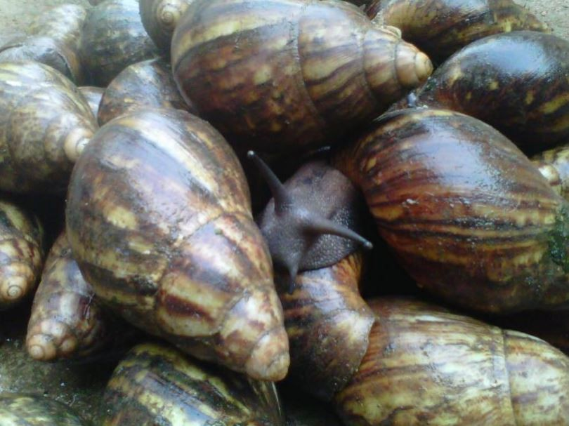
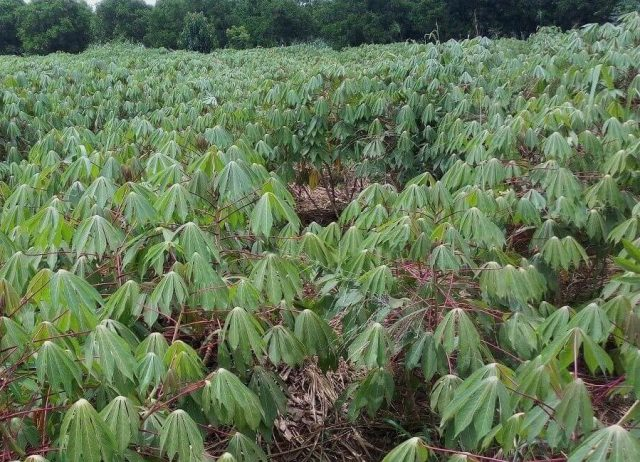
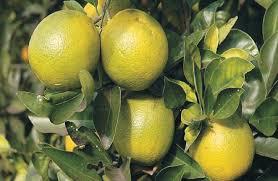
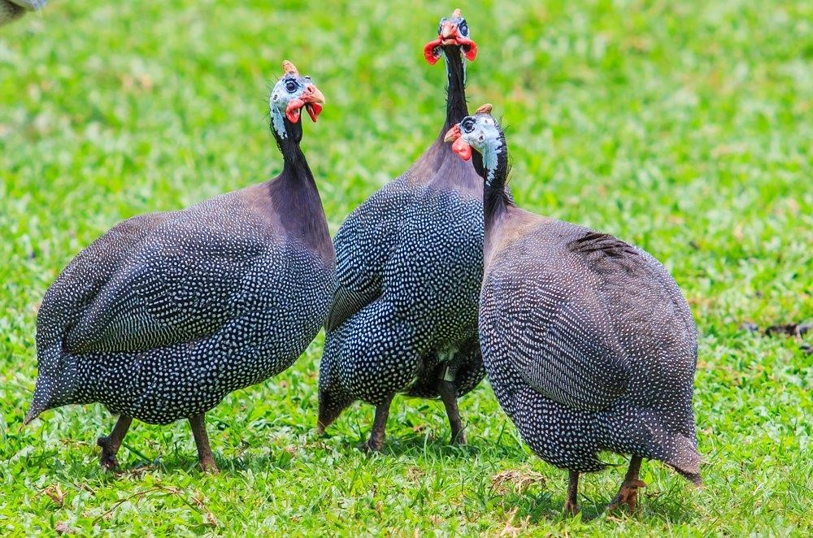

JO Farms
JO Farms
Official Highlights
Our operations combine commercial production and community impact through structured agricultural programs. Snapshot values below are based on our 2025 operational review.
2025 impact summary: 180 trainees completed practical modules, 62% of alumni reported income growth within 6 months, and 14 youth-led agribusiness startups were supported through mentorship.
Production Divisions
Our farm model supports year-round productivity, market supply, and innovation transfer to upcoming agripreneurs.

Mushroom Production
Commercial cultivation of edible mushrooms with controlled sheds and spawn support systems.

Snail Farming
Structured breeding based on climate and soil suitability for domestic and regional markets.

Cassava Cultivation
Industrial and table cassava production using mechanized farm operations and secure plots.

Citrus Orchards
Multi-variety citrus plantations established for long-term fruit output and value addition.

Poultry and Livestock
Integrated livestock production supporting protein supply and practical training modules.

Afforestation Drive
Tree-based restoration programs to improve ecosystem health and support climate resilience.
Training Center for Sustainable Agriculture
We provide practical, field-focused training for youth, farmer groups, and institutions. Each training cycle combines modern techniques with local context to improve yield, quality, and profitability.
- Hands-on modules in mushroom, snail, poultry, and crop systems
- Farm business orientation and market-entry guidance
- Mentorship for youth-led agribusiness startups
- Cohort calendar released quarterly with weekend and weekday tracks